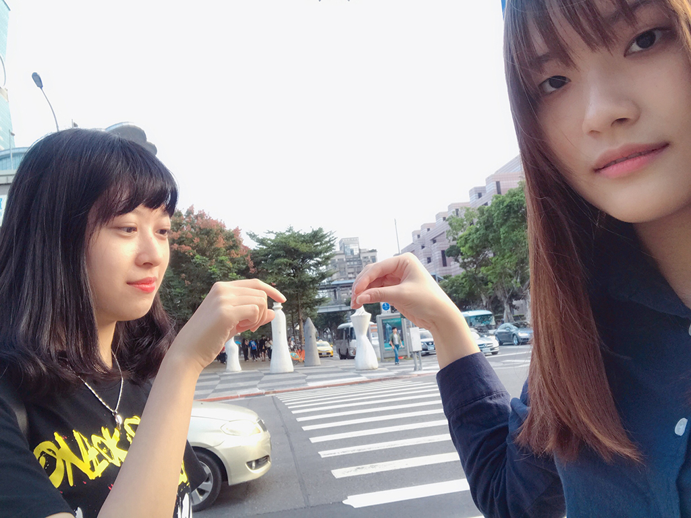

公共藝術之創意生活~原來公共藝術可以這樣玩?
不知道大家說到公共藝術會想到什麼?是台北101前面的LOVE?

還是一樣在101前面，很可愛但又說不出名字的這個大寶寶?

要你跟它互動的話不用多說，一定就是拍照了吧!每天都有成千上萬個觀光客在101前面拍照，可是拍來拍去，手指頭一二三四五六七到十都比完了，最後再來個愛心，好像就沒什麼特別的了，照片看來看去也就是那樣十分無趣，所以城市藝站的團隊舉辦了一個公共藝術的徵稿活動，考驗大家的創意及想像力，用不同的方式跟公共藝術互動，最後再進行票選。
#1 母親
象征著母親的偉大。母親懷胎十月犧牲奉獻自己，把我們生下來並細心呵護
著我們、愛護著我們使我們茁壯成長。
Image source_紀淼胤
#2 The stone in my soul
在路上看到了一顆大石頭，覺得他很有意境，很像我心中的那顆。每個人心中都有一顆放不下的石頭，可能是關於曾經在你身邊的那個重要的人，時間久了你以為你忘了，但其實他一直卡在你的心中。永遠搬不走。
 Image source_張育慈
Image source_張育慈
#3 玉兔奔月
中秋人團圓，生活在月亮上的玉兔在中秋夜也要返鄉過節。
Image source_陳治穎
#4 下棋
「局」就像一個在馬路邊的大棋盤，我們想像自己在這人來人往的街口上一起下棋！
Image source_林思伶
#5 蓋
一個城市，有了公共藝術的點綴，便為生活添加色彩。而這個公共藝術「候鳥」，主要也是表達城市成了離鄉人們來到城市打拼的棲地，透過「蓋」我想的是：這座城市也許不只是暫時的「棲地」，而是大家一起「再」打造的家園。
Image source_張瑜庭
這樣一看你是不是覺得每張照片都更有特色了，而公共藝術應該也不會那麼無趣了吧? 上面那些照片你最喜歡哪一張呢?如果是你的話，你又會怎麼跟公共藝術互動呢?